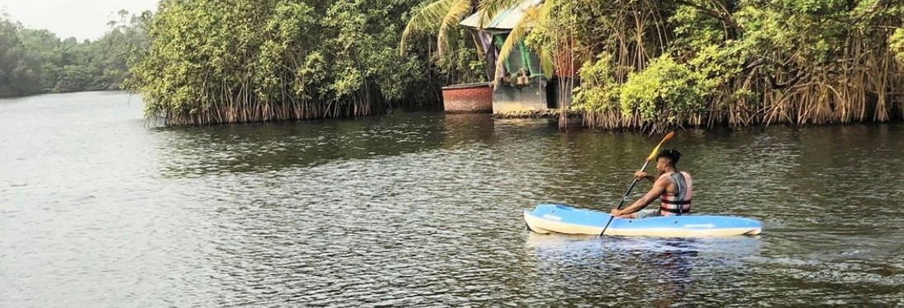

Chinonso Nkpolukwu
Summary:
Currently 24 years of age, born and raised in Lagos Nigeria till the age of eight. I am one of five siblings, that includes two sisters and two brothers. I speak fluent English and also understand my native language of Yoruba, but speak it poorly.
Activites and hobbies include anything that requires physical exertion on my part. I am a fitness fanatic, but more specifically enjoy playing soccer and running. I’m also big on lifting weights. I’m a huge fan of the NBA and a diehard Houston Rockets fan.
An interesting fact about myself is I am a self proclaimed “passive nerd” , I do a lot of nerdy activities that I am beginning to realise are really nerdy. For example I enjoy documenting everyday things happening in my life on google docs and creating little projects and challenges for myself. My most recent is a book reading challenge.
Ideal job:
Cyber Security Analyst.
Full Profile:
You can read more about me here.